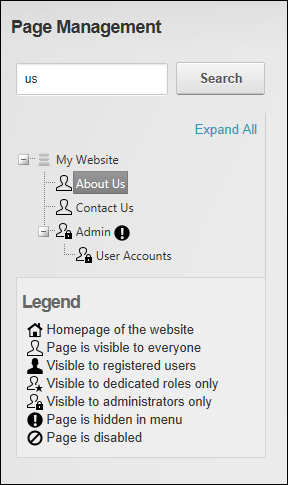

How to search for all or part of a page name using the Pages module. DNN Platform users must be granted Edit Page permissions to the page where the Pages module is located as well as View Page / View permissions to see the page in the search results. Evoq Content users must be granted Add Content permissions to the page where the Pages module is located as well as View permissions.
